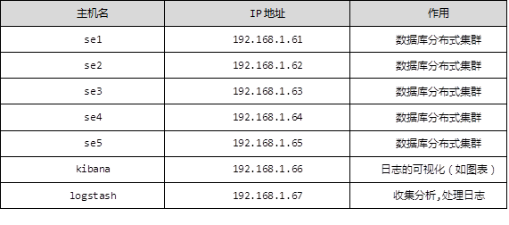

本案例要求：
1）ELK是日志分析平台，不是一款软件,而是一整套解决方案,是三个软件产品的首字母缩写，ELK分别代表：
Elasticsearch:负责日志检索和储存
Logstash:负责日志的收集和分析、处理
Kibana:负责日志的可视化
2) ELK组件在海量日志系统的运维中,可用于解决分布式日志数据集中式查询和管理系统监控等，故障排查，安全信息和事件管理，报表功能
部署Elasticsearch分布式集群安装，Kibana作为可视化平台，实时总结流量和数据的图表，Logstash用来收集处理日志，如表-1所示：
表-1
实现此案例需要按照如下步骤进行。
步骤一：先准备一台虚拟机
1）更改主机名，配置IP，搭建第三方yum源(之前已经搭建过几次,这里不再赘述)
- [root@se1 ~]# echo se1 > /etc/hostname
- [root@se1 ~]# vim /etc/sysconfig/network-scripts/ifcfg-eth0
- # Generated by dracut initrd
- DEVICE="eth0"
- ONBOOT="yes"
- IPV6INIT="no"
- IPV4_FAILURE_FATAL="no"
- NM_CONTROLLED="no"
- TYPE="Ethernet"
- BOOTPROTO="static"
- IPADDR=192.168.1.61
- PREFIX=24
- GATEWAY=192.168.1.254
- [root@se1 ~]# vim /etc/yum.repos.d/local.repo
- [local_repo]
- name=CentOS-$releasever - Base
- baseurl="ftp://192.168.1.254/system"
- enabled=1
- gpgcheck=1
- [elk]
- name=elk
- baseurl="ftp://192.168.1.254/elk"
- enabled=1
- gpgcheck=0
2）部署elasticsearch第一个节点
- [root@se1 ~]# vim /etc/hosts
- 192.168.1.61 se1
- 192.168.1.62 se2
- 192.168.1.63 se3
- 192.168.1.64 se4
- 192.168.1.65 se5
- [root@se1 ~]# yum -y install java-1.8.0-openjdk.x86_64
- [root@se1 ~]# java -version
- openjdk version "1.8.0_131"
- OpenJDK Runtime Environment (build 1.8.0_131-b12)
- OpenJDK 64-Bit Server VM (build 25.131-b12, mixed mode)
- [root@se1 ~]# sestatus //查看selinux状态
- SELinux status: disabled
- [root@se1 ~]# yum -y install elasticsearch
- [root@se1 ~]# vim /etc/elasticsearch/elasticsearch.yml
- 17 cluster.name: myelk //配置集群名字
- 23 node.name: se1 //当前主机名称
- 54 network.host: 0.0.0.0 // 0.0.0.0（监听所有地址）
- 68 discovery.zen.ping.unicast.hosts: ["se1", "se2","se3"]
- //声明集群里的主机成员有谁，不需要全部写进去
- [root@se1 ~]# systemctl restart elasticsearch
- [root@se1 ~]# systemctl enable elasticsearch
- [root@se1 ~]# ss -antup | grep 9200
- tcp LISTEN 0 50 :::9200 :::* users:(("java",pid=23231,fd=110))
3）访问9200端口查看是否安装成功，如图-1所示：
图-1
本案例要求：
实现此案例需要按照如下步骤进行。
步骤一：安装elasticsearch和java-1.8.0-openjdk，同步配置文件
备注：在步骤一已经安装了一台elasticsearch，这里只需再准备四台即可
1）更改对应的主机名、 ip地址以及搭建yum源（以案例1为例子）
2）安装elasticsearch四台主机同样操作（以se2为例子）
- [root@se2 ~]# yum -y install java-1.8.0-openjdk.x86_64
- [root@se2 ~]# yum -y install elasticsearch
3）同步配置/etc/hosts和/etc/elasticsearch/elasticsearch.yml, 修改node.name字段（以se2为例子）
- [root@se1 ~]# for i in {62..65} ; do scp /etc/hosts 192.168.1.$i:/etc/hosts; done
- [root@se1 ~]# for i in {62..65} ; do scp \
- /etc/elasticsearch/elasticsearch.yml \
- 192.168.1.$i:/etc/elasticsearch/elasticsearch.yml; done
- [root@se2 ~]# vim /etc/elasticsearch/elasticsearch.yml
- node.name: se2 //另外三台修改为对应se3，se4，se5
- [root@se2 ~]# systemctl restart elasticsearch
- [root@se2 ~]# systemctl enable elasticsearch
4）访问测试，如图-2所示：
可以访问61-65的任意一台主机， 集群的节点都是5台，若先启动的是se4或se5，这两个会自动成为各自的集群，解决办法，先启动集群里的se1或se2或se3其中的一台，或者把se4和se5重启，se4和se5会自动加进去
ES 集群验证：返回字段解析：
”status”: ”green“ 集群状态：绿色为正常、黄色表示有问题但不是很严重、红色表示严重故障
”number_of_nodes”： 5, 表示集群中节点的数量
图-2
本案例要求：
实现此案例需要按照如下步骤进行。
步骤一：curl命令的使用
http的请求方法：
常用方法 GET，POST，HEAD
其他方法 OPTIONS，PUT，DELETE，TRACE和CONNECT
ES常用：
PUT --增
DELETE --删
POST --改
GET --查
系统命令curl：
是一个利用URL规则在命令行下工作的文件传输工具,可以说是一款很强大的http命令行工具。它支持多种请求模式,自定义请求头等强大功能,是一款综合工具
curl 常用参数介绍：
-A 修改请求 agent
-X 设置请求方法
-i 显示返回头信息
1）索引的分片信息，如图-1所示：
- [root@room9pc01 ~]# curl -X GET http://192.168.1.61:9200/_cat
图-1
2）显示health的详细信息，如图-2所示：
- [root@room9pc01 ~]# curl -X GET http://192.168.1.62:9200/_cat/health?v
图-2
3）查看nodes的帮助，如图-3所示：
- [root@room9pc01 ~]# curl -X GET http://192.168.1.61:9200/_cat/nodes?help
图-3
本案例要求：
实现此案例需要按照如下步骤进行。
步骤一：部署插件
插件装在哪一台机器上，只能在哪台机器上使用（这里安装在se5机器上面）
1）使用远程 uri 路径可以直接安装
- [root@se5 ~]# cd /usr/share/elasticsearch/bin
- [root@se5 bin]# ./plugin install \
- ftp://192.168.1.254/elk/elasticsearch-head-master.zip //安装head插件
- [root@se5 bin]# ./plugin install \
- ftp://192.168.1.254/elk/elasticsearch-kopf-master.zip //安装kopf插件
- [root@se5 bin]# [root@se5 bin]# ./plugin install \
- ftp://192.168.1.254/elk/bigdesk-master.zip
- //安装bigdesk插件
- [root@se5 bin]# ./plugin list //查看安装的插件
- Installed plugins in /usr/share/elasticsearch/plugins:
- - head
- - kopf
- - bigdesk
2）访问head插件，如图-4所示：
- [root@room9pc01 ~]# firefox http://192.168.1.65:9200/_plugin/head
图-4
3）访问kopf插件，如图-5所示：
- [root@room9pc01 ~]# http://192.168.1.65:9200/_plugin/kopf
图-5
4）访问bigdesk插件，如图-6所示：
- [root@room9pc01 ~]# http://192.168.1.65:9200/_plugin/bigdesk
图-6
步骤二：使用head创建index
- [root@se5 bin]# curl -X PUT "http://192.168.1.65:9200/index" -d '
- > {
- > "settings":{
- > "index":{
- > "number_of_shards":5, //分片数
- > "number_of_replicas":1 //副本数
- > }
- > }
- > }'
- {"acknowledged":true}
步骤三：使用kopf查看数据，如图-7所示：
图-7
本案例要求：
实现此案例需要按照如下步骤进行。
步骤一：增加数据
- [root@se5 ~]# locale
- [root@se5 ~]# LANG=en_US.UTF-8 //设置编码
- [root@se5 ~]# curl -X PUT "http://192.168.1.65:9200/taindex/teacher/1" -d '{
- "职业":"诗人",
- "名字":"李白",
- "称号":"诗仙",
- "年代":"唐"
- }'
- {"_index":"taindex","_type":"teacher","_id":"1","_version":2,"_shards":{"total":2,"successful":2,"failed":0},"created":false}
步骤二：修改数据
- [root@se5 ~]# curl -X PUT "http://192.168.1.65:9200/taindex/teacher/1" -d '{
- "doc":{
- "年代": "唐代"
- }
- }'
- {"_index":"taindex","_type":"teacher","_id":"1","_version":3,"_shards":{"total":2,"successful":2,"failed":0},"created":false}
步骤三：查询数据
- [root@se5 ~]# curl -X GET "http://192.168.1.65:9200/taindex/teacher/3?pretty"
- {
- "_index" : "taindex",
- "_type" : "teacher",
- "_id" : "3",
- "found" : false
- }
步骤四：删除数据
- [root@se5 ~]# curl -X DELETE "http://192.168.1.65:9200/taindex/teacher/3?pretty"
- {
- "found" : false,
- "_index" : "taindex",
- "_type" : "teacher",
- "_id" : "3",
- "_version" : 1,
- "_shards" : {
- "total" : 2,
- "successful" : 2,
- "failed" : 0
- }
- }
步骤五：删除索引
- [root@se5 bin]# curl -X DELETE http://192.168.1.65:9200/taindex/
- //删除索引
- {"acknowledged":true}
- [root@se5 bin]# curl -X DELETE http://192.168.1.65:9200/* //删除所有索引
- {"acknowledged":true}
本案例要求：
实现此案例需要按照如下步骤进行
步骤一：安装kibana
1）在另一台主机，配置ip为192.168.1.66，配置yum源，更改主机名
2）安装kibana
- [root@kibana ~]# yum -y install kibana
- [root@kibana ~]# rpm -qc kibana
- /opt/kibana/config/kibana.yml
- [root@kibana ~]# vim /opt/kibana/config/kibana.yml
- 2 server.port: 5601
- //若把端口改为80，可以成功启动kibana，但ss时没有端口，没有监听80端口，服务里面写死了，不能用80端口，只能是5601这个端口
- 5 server.host: "0.0.0.0" //服务器监听地址
- 15 elasticsearch.url: http://192.168.1.61:9200
- //声明地址，从哪里查，集群里面随便选一个
- 23 kibana.index: ".kibana" //kibana自己创建的索引
- 26 kibana.defaultAppId: "discover" //打开kibana页面时，默认打开的页面discover
- 53 elasticsearch.pingTimeout: 1500 //ping检测超时时间
- 57 elasticsearch.requestTimeout: 30000 //请求超时
- 64 elasticsearch.startupTimeout: 5000 //启动超时
- [root@kibana ~]# systemctl restart kibana
- [root@kibana ~]# systemctl enable kibana
- Created symlink from /etc/systemd/system/multi-user.target.wants/kibana.service to /usr/lib/systemd/system/kibana.service.
- [root@kibana ~]# ss -antup | grep 5601 //查看监听端口
3）浏览器访问kibana，如图-8所示：
- [root@kibana ~]# firefox 192.168.1.66:5601
图-8
4）点击Status，查看是否安装成功，全部是绿色的对钩,说明安装成功，如图-9所示：
图-9
5）用head插件访问会有.kibana的索引信息，如图-10所示：
- [root@se5 ~]# firefox http://192.168.1.65:9200/_plugin/head/
图-10